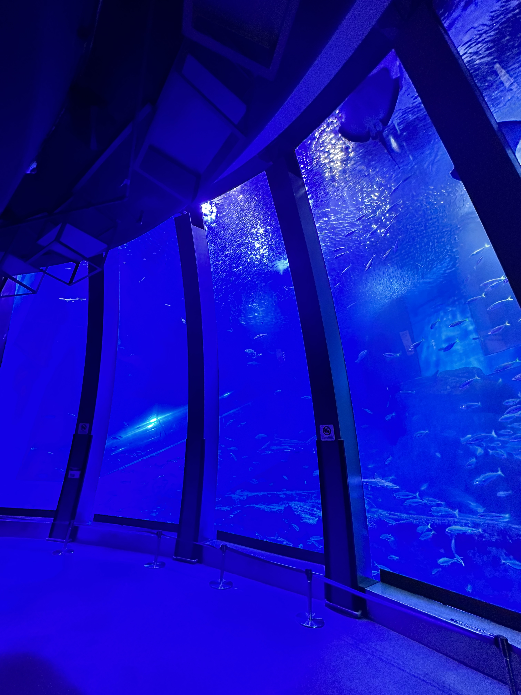
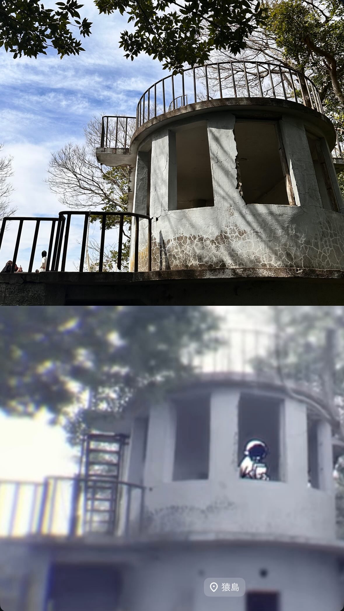
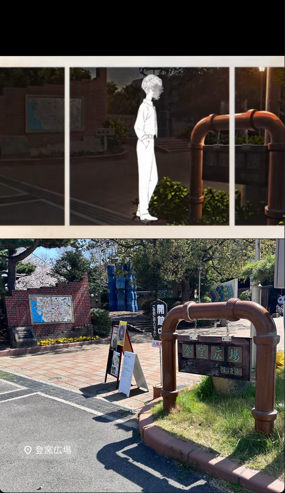
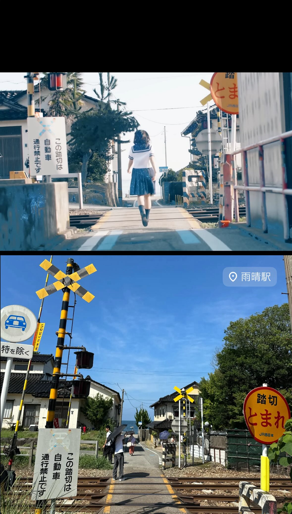
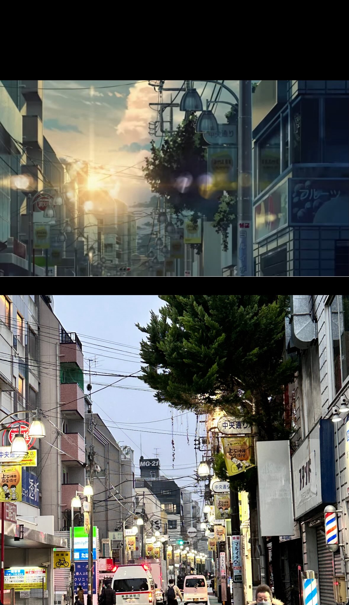
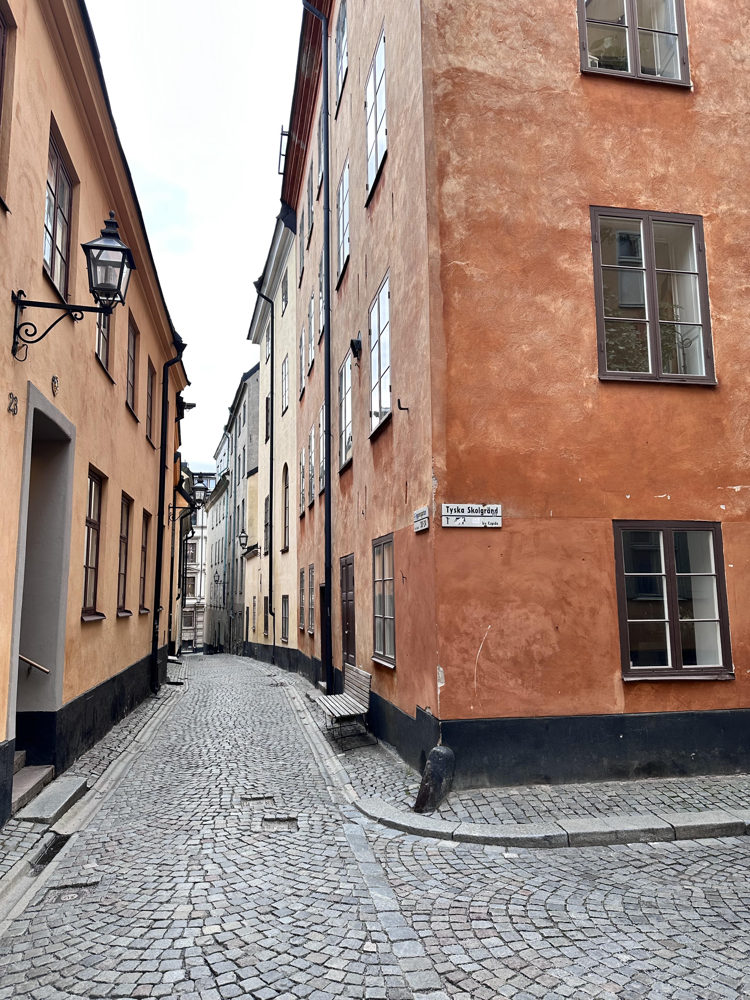
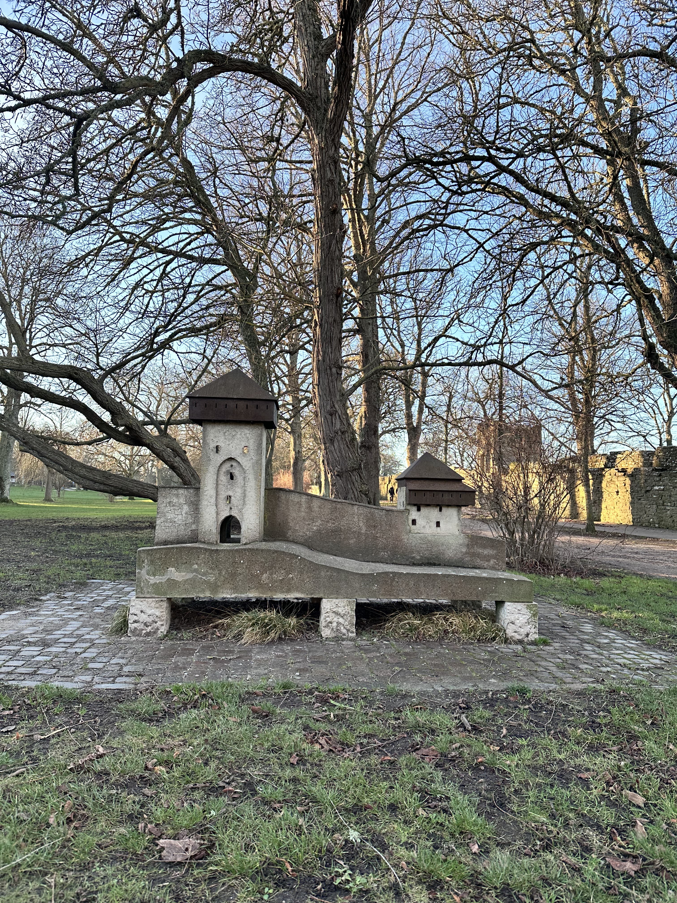
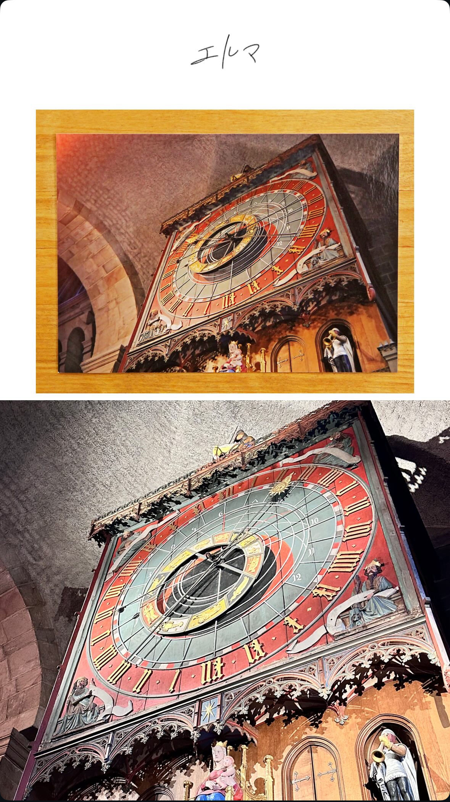

pilgrimage
基本的にはヨルシカのアルバムのジャケット、MVの撮影地、ライブ映像で出てきた背景の写真などの聖地を巡るために色々なところに行っています。このページでは今まで訪れた聖地を紹介します。
右の写真は「横浜・八景島シーパラダイス」です。
ここは2021年に行われたヨルシカのライブ「前世」が行われた場所です。
まだまだ聖地はいくつもあるのでいつか制覇したいです。

基本的にはヨルシカのアルバムのジャケット、MVの撮影地、ライブ映像で出てきた背景の写真などの聖地を巡るために色々なところに行っています。このページでは今まで訪れた聖地を紹介します。
右の写真は「横浜・八景島シーパラダイス」です。
ここは2021年に行われたヨルシカのライブ「前世」が行われた場所です。
まだまだ聖地はいくつもあるのでいつか制覇したいです。

横須賀市沖にある東京湾唯一の自然島で、「パレード」という楽曲のMVの撮影地です。戦時中に要塞として使用されていた島なので、今でも独特な雰囲気が残っています。聖地とは関係なくおすすめスポットなので神奈川県に来た際には是非行ってみてください。

愛知県の常滑市は日本でも有数の窯元であり、今でも日本の代表的なやきものの産地です。ここは「夜行」という楽曲のMVの撮影地です。この広場には展示工房館もあり誰でも無料で入場することができます。外国人観光客も何組か訪れていて、日本の伝統的な文化を体験できる場所でした。

富山県の高岡市にある小さな駅です。ここは「ただ君に晴れ」という楽曲の撮影地です。JR氷見線に乗って行きましたが、電車から日本海が一望できて凄く感動したことを覚えています。電車旅が好きな方には特におすすめの駅です。金沢から一本でいけるので北陸旅行の際にはぜひ行ってみてください。

東京の練馬区にある商店街です。ヨルシカのコンポーザーであるn-bunaさんが昔住んでいた街で、東京の都会のイメージからは大きく離れる雰囲気の街でした。

ヨルシカの聖地巡礼の中でも最高難易度を誇るスウェーデンのストックホルムです。n-bunaさんが子供の頃に住んでいたことからヨルシカの大きなルーツになっている街です。ガムラスタンというストックホルムにある旧市街の写真が、アルバム「だから僕は音楽を辞めた」の撮影地になっています。私も年末にようやく行くことができて感無量でした。

バルト海に浮かぶスウェーデン最大の島で、ヨルシカのアルバム「エルマ」のジャケットになっている場所です。ヨルシカの他にもジブリ作品として有名な「魔女の宅急便」のモデル地であることも有名です。宮崎駿監督は70年代にこの島に訪れてこの地を映画のモデルにされました。

スウェーデンの南部にある古都ルンドにあるルンド大聖堂です。デンマークのコペンハーゲンからとても近く、電車で移動しました。人の量も多すぎず、建物はとても綺麗な街で滞在時間こそ短かったものの強く印象に残っています。
